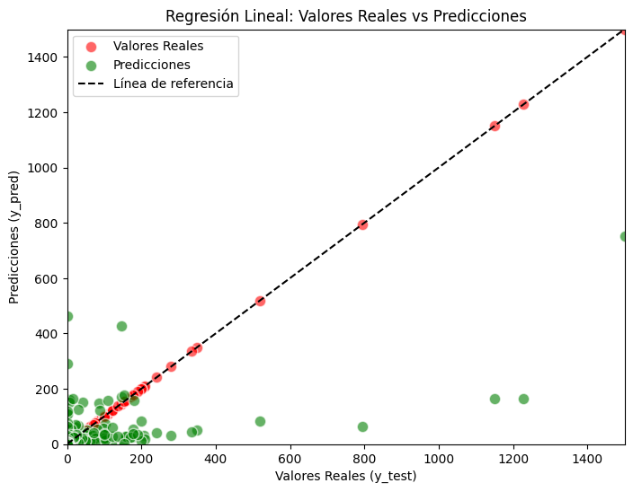

Linear Regressor Model#
import numpy as np # type: ignore
import pandas as pd
import matplotlib.pyplot as plt
import seaborn as sns
import warnings
warnings.filterwarnings('ignore')
import plotly.express as px
import plotly.graph_objects as go
from sklearn.model_selection import train_test_split
from sklearn.linear_model import LinearRegression
from sklearn.metrics import mean_squared_error, r2_score
import os
for dirname, _, filenames in os.walk('/kaggle/input'):
for filename in filenames:
print(os.path.join(dirname, filename))
ruta = r'C:\Users\jthow\iCloudDrive\Documents\3_Maestria_Estadistica_UNINORTE\3_Tercer_Semestre\Machine_Learning\tornados.csv.zip'
df = pd.read_csv(ruta)
df['loss'] = df['loss'].replace(0, pd.NA)
df['loss'] = df['loss'].interpolate(method='linear')
df['mag'] = df['mag'].fillna(df['mag'].mean())
df.isnull().sum()
om 0
yr 0
mo 0
dy 0
date 0
time 0
tz 0
datetime_utc 0
st 0
stf 0
mag 0
inj 0
fat 0
loss 0
slat 0
slon 0
elat 0
elon 0
len 0
wid 0
ns 0
sn 0
f1 0
f2 0
f3 0
f4 0
fc 0
dtype: int64
from sklearn.model_selection import train_test_split
from sklearn.linear_model import LinearRegression
# Definir X y y (asegúrate de que ya tienes estas variables previamente definidas)
X = df[['mag', 'slat', 'slon', 'elat', 'elon', 'len', 'wid','f1', 'f2', 'f3', 'f4','loss']]
y = df['inj']
# Dividir los datos en conjunto de entrenamiento y prueba (80% entrenamiento, 20% prueba)
X_train, X_test, y_train, y_test = train_test_split(X, y, test_size=0.2, random_state=42)
# Crear y ajustar el modelo de regresión lineal
lr = LinearRegression().fit(X_train, y_train)
# Mostrar los coeficientes y el intercepto del modelo
print("Coeficientes del modelo:", lr.coef_)
print("Intercepto del modelo:", lr.intercept_)
# Hacer predicciones con el modelo en el conjunto de prueba
y_pred = lr.predict(X_test)
# Evaluar el modelo con la puntuación R^2 (coeficiente de determinación)
r2_score = lr.score(X_test, y_test)
print(f"Puntuación R^2 en el conjunto de prueba: {r2_score}")
Coeficientes del modelo: [ 2.10234115e+00 -3.67444189e-02 8.65045714e-04 8.92198545e-03
1.16704449e-02 2.82022808e-01 3.32650294e-03 -6.83065524e-04
-7.11357319e-03 1.13180648e-02 -2.35729609e-03 2.91271156e-07]
Intercepto del modelo: -0.07505882239354134
Puntuación R^2 en el conjunto de prueba: 0.3305327486926829
import matplotlib.pyplot as plt
import numpy as np
# Asegúrate de que la celda que define y_test y y_pred se haya ejecutado antes de ejecutar esta celda.
# Ajustar el gráfico de dispersión
plt.figure(figsize=(8, 6))
# Graficar los puntos de los valores reales (y_test) en rojo
plt.scatter(y_test, y_test, color='red', alpha=0.6, label="Valores Reales", edgecolors='w', s=80)
# Graficar los puntos de las predicciones (y_pred) en verde
plt.scatter(y_test, y_pred, color='green', alpha=0.6, label="Predicciones", edgecolors='w', s=80)
# Agregar una línea de referencia y = x
plt.plot([min(y_test), max(y_test)], [min(y_test), max(y_test)], color='black', linestyle='--', label="Línea de referencia")
# Ajustar límites de los ejes para que coincidan mejor
plt.xlim([min(y_test) - 0.1, max(y_test) + 0.1])
plt.ylim([min(y_test) - 0.1, max(y_test) + 0.1])
# Etiquetas y título
plt.xlabel('Valores Reales (y_test)')
plt.ylabel('Predicciones (y_pred)')
plt.title('Regresión Lineal: Valores Reales vs Predicciones')
# Agregar leyenda
plt.legend()
# Mostrar el gráfico
plt.show()

Metricas Linear Regressor#
from gettext import install
# Install the tabulate package
%pip install tabulate
Requirement already satisfied: tabulate in c:\users\jthow\miniconda3\envs\ml_venv\lib\site-packages (0.9.0)
Note: you may need to restart the kernel to use updated packages.
[notice] A new release of pip is available: 25.0.1 -> 25.1
[notice] To update, run: python.exe -m pip install --upgrade pip
import numpy as np
import pandas as pd
from sklearn.linear_model import LinearRegression
from sklearn.model_selection import GridSearchCV
from sklearn.pipeline import Pipeline
from sklearn.preprocessing import StandardScaler
from sklearn.metrics import mean_absolute_percentage_error, mean_squared_error, r2_score
from statsmodels.stats.diagnostic import acorr_ljungbox
from scipy.stats import jarque_bera
from joblib import dump, load
# Cargar los datos (asegúrate de que esta parte sea correcta para tu caso)
# X_train, X_test, y_train, y_test = ...
# Definir el pipeline para el modelo de regresión lineal
pipelines = {
'LinearRegression': Pipeline([
('scaler', StandardScaler()),
('model', LinearRegression())
])
}
# Definir los grids de hiperparámetros para cada modelo
param_grids = {
'LinearRegression': {}
}
# Realizar GridSearchCV para el modelo
best_models = {}
for model_name, pipeline in pipelines.items():
if model_name in param_grids:
grid_search = GridSearchCV(pipeline, param_grids[model_name], cv=5, n_jobs=-1, scoring='neg_mean_squared_error')
grid_search.fit(X_train, y_train)
best_models[model_name] = grid_search.best_estimator_
dump(grid_search, 'grid_lr.joblib') # Guardar el modelo con el nombre grid_lr.joblib
else:
print(f"Warning: Model name '{model_name}' not found in param_grids. Skipping this model.")
# Calcular las métricas para el modelo
metrics = {}
for model_name, model in best_models.items():
y_pred = model.predict(X_test)
residuals = y_test - y_pred
mape = mean_absolute_percentage_error(y_test, y_pred)
rmse = np.sqrt(mean_squared_error(y_test, y_pred))
r2 = r2_score(y_test, y_pred)
jb_p_value = jarque_bera(residuals)[1]
lb_result = acorr_ljungbox(residuals, lags=[10], return_df=False)
lb_p_value = lb_result['lb_pvalue'].iloc[0]
metrics[model_name] = {
"MAPE": f"{mape:.2f}",
"RMSE": f"{rmse:.2f}",
"R Cuadrado": f"{r2:.2f}",
"Ljung-Box p-value": f"{lb_p_value:.2f}",
"Jarque-Bera p-value": f"{jb_p_value:.2f}"
}
# Crear un DataFrame combinado para las métricas de todos los modelos
metrics_df = pd.DataFrame(metrics).T
# Redondear los valores a dos decimales
metrics_df = metrics_df.round(2)
# Mostrar la tabla combinada
display(metrics_df)
| Jarque-Bera p-value | Ljung-Box p-value | MAPE | R Cuadrado | RMSE | |
|---|---|---|---|---|---|
| LinearRegression | 0.00 | 0.93 | 8950885788248275.00 | 0.33 | 18.83 |